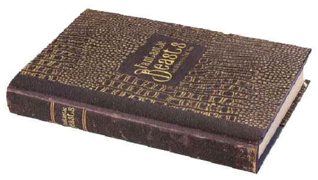
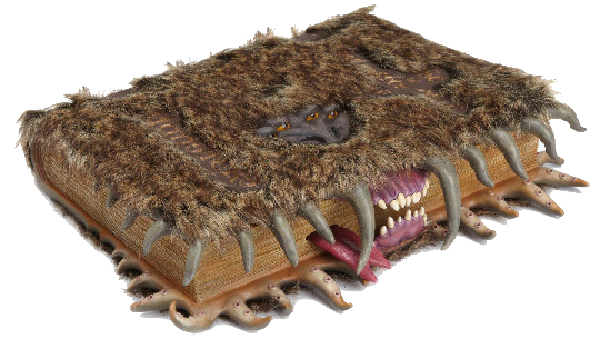
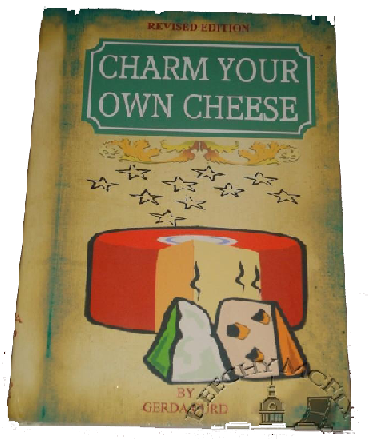

Spellbooks
|
Potions
|
Defense Against the Dark Arts
|
Magical History
|
Magical Creatures
|
Quidditch
|
Flora
|
Miscellaneous
The Standard Book of Spells, Grades 1-7
by Miranda Goshawk
Price: 1 Galleon
The Standard Book of Spells is a collection of books written by Miranda Goshawk for a variety of subjects at Hogwarts School of Witchcraft and Wizardry. The series includes seven books, apparently for each year at Hogwarts, covering the spells students are taught.
The Book of Charms & Spells
by Samuel Journeux
Price: 3 Galleons
The book that Filius Flitwick gave his personal, annotated to members
of the Statute of Secrecy Task Force who pursued a Professorship profession
to help them improve their casting of charms to address the events of the Calamity.
Magical Theory
by Adalbert Waffling
Price: 2 Galleons
"All you will ever need to know about what makes spells work."
—Advert at Flourish and Blotts
Excerpt from the text:
"Tamper with the deepest mysteries — the source of life, the essence of self - only if prepared for consequences of the most extreme and dangerous kind.""
A Beginner's Guide to Transfiguration
By Emeric Switch
Price: 3 Galleons
"The ideal starting point for every student of Transfiguration."
—Advert at Flourish and Blotts
"When Transfiguring, it is important to make firm
and decisive wand movements. Do not wiggle or twirl your wand unnecessarily, or the
Transfiguration will certainly be unsuccessful.""
"Form a clear mental picture of the object you are hoping to create before
attempting a Transfiguring spell.""
"Beginners should say the spell clearly. More advanced wizards do not need to
say the spell aloud."
Intermediate Transfiguration
Price: 2 Galleons
"A companion for the student continuing their studies in the field of Transfiguration."
—The book advertisement at Flourish and Blotts
Magical Drafts and Potions
by Arenius Jigger
Price: 2 Galleons
"For basic brews, look no further. You will need to buy and
collect ingredients to brew potions from this book, so stock up on as
many items as you can."—Advert at Flourish and Blotts
The Dark Forces: A Guide to Self-Protection
by Quentin Trimble
Price: 1 Galleon
"This book gives an excellent grounding in magical self-defence."
—Advert at Flourish and Blotts
Curses and Counter-Curses
Price: 3 Galleons
"Bewitch your friends and befuddle your enemies with the latest revenges: Hair loss, Jelly-Legs, Tongue-Tying, and much, much more."
—Description
A History of Magic
by Bathilda Bagshot
Price: 2 Galleons
"Bathilda Bagshot embarked on the journey of magical knowledge decades ago. She has always been fascinated by the mysteries and curiosities of the wizarding world. A History of Magic examines significant moments and facts from the beginning of time to the 19th century making this book an essential piece of wizarding literature."
—The back cover
Fantastic Beasts and Where to Find Them

by Newt Scamander
Price: 2 Galleons
"Newt's masterpiece had been an approved textbook at Hogwarts School of Witchcraft and Wizardry ever since its publication and must take a substantial amount of credit for our students' consistently high results in Care of Magical Creatures examinations — yet it is not a book to be confined to the classroom. No wizarding household is complete without a copy of Fantastic Beasts, well thumbed by the generations who have riffled its pages in search of the best way to rid the lawn of Horklumps, interpret the mournful cries of the Augurey, or cure their pet Puffskein of drinking out of the toilet."
—Albus Dumbledore

The Monster Book of Monsters
by Edwardus Lima
Price: 4 Galleons
"A vicious guide to monstrous creatures."—Description
The Monster Book of Monsters, by Edwardus Lima, is a particularly vicious sentient textbook that is used in Care of Magical Creatures while Rubeus Hagrid (who thought the book's aggressive nature was amusing) was the Professor for that subject at Hogwarts School of Witchcraft and Wizardry.
The book is quite informative, but one usually finds it difficult to access the information within due to the book's unfortunate tendency to try and bite off the reader's fingers. The only way to subdue the book is to stroke its spine, upon which the book opens placidly.
Quidditch Through the Ages
by Kennilworthy Whisp
Price: 14 Sickles and 3 Knuts
"The definitive work on the origins and history of Quidditch. Highly recommended."
—Brutus Scrimgeour's review of Quidditch Through the Ages
Quidditch Through the Ages is a book detailing the history, evolution, and rules of Quidditch first published in 1952.
The Official Guide to the Quidditch World Cup
Price: 39 Galleons
The Official Guide to the Quidditch World Cup is the official guidebook to the Quidditch World Cup, written and published by the International Confederation of Wizards' Quidditch Committee, providing information on the rules and history of the Quidditch World Cup.
One Thousand Magical Herbs and Fungi
by Phyllida Spore
Price: 2 Galleons
"Bathilda Bagshot embarked on the journey of magical knowledge decades ago. She has always been fascinated by the mysteries and curiosities of the wizarding world. A History of Magic examines significant moments and facts from the beginning of time to the 19th century making this book an essential piece of wizarding literature."
—The back cover
Encyclopedia of Toadstools
Price: 1 Galleon
"Everything you ever wanted to know about toadstools."
—Description
Charm Your Own Cheese (Revised)
by Gerda Curd

Price: 5 Galleons
"Charm Your Own Cheese is a cookery book. "—Description
Unfogging the Future
by Seer Cassandra Vablatzky
Price: 2 Galleons
"A guide to all basic fortune-telling methods, including palmistry, crystal balls and bird entrails."
—The advertisement at Flourish and Blotts
The Invisible Book of Invisibility
Price: 5 Galleons
The Invisible Book of Invisibility is a textbook about the power of invisibility. The book itself is completely invisible, making it difficult to find and, presumably, to actually read or do anything with. Copies of the book can be found in Flourish and Blotts.
BACK TO TOP >